|
|
| crabs text index | photo index |
| Phylum Arthropoda > Subphylum Crustacea > Class Malacostraca > Order Decapoda > Brachyurans |
| Ferocious
reef crab Eriphia ferox Family Eriphiidae updated Dec 2019 Where seen? This energetic crab with bright red eyes is often seen on our Southern shores clambering among boulders at night. Also on coral rubble and under stones. Sometimes also seen on undisturbed rocky shores of our Northern shores. It is rarely seen out and about during daylight. 'Ferox' in Latin means 'ferocious' or wild and untamed. Features: 5-7cm. Body oval, with several (about 6) tiny teeth at the edges near the eyes. Upper surface covered with pimples. Reddish to purplish brown. Large pincers covered with pimples with reddish brown tips. One of its pincers is enlarged and armed with a molar-like 'tooth' to crush snail shells. The other pincer has slim 'fingers' that act like chopsticks to remove the snail after its shell is crushed. Walking legs sparsely hairy. Eyes bright red. It is fast moving and can be aggressive if it is cornered. |
|
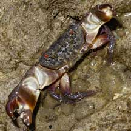 Pulau Jong, Jul 06 |
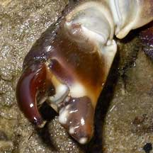 One of the pincers enlarged with 'molar' to crush snail shells. |
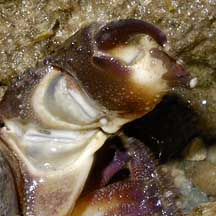 The other pincer has slim 'fingers' to pick out the soft snail. |
| According to the Singapore Red Data Book, this crab had been known
for a long time as Eriphia smithii which is restricted to the
western part of the Indian Ocean. The one in Southeast and East Asia
is a new species and was recently named Eriphia ferox for its
fierce temperament. According to Ng, Peter K. L. et. al, 2008. Systema Brachyurorum: Part 1. An annotated checklist of extant Brachyuran crabs of the world. "Eriphia smithii is supposedly a widely distributed Indo-West Pacific species. The actual E. smithii is restricted to the Indian Ocean. Most specimens in Southeast and East Asia as well as Australia belong to an undescribed species". Sometimes confused with similar crabs in the same habitat. Here's more on how to tell apart big crabs with big pincers seen on the rocky shores and coral rubble. Status and threats: This crab is listed as 'Vulnerable' on the Red List of threatened animals of Singapore. |
| Ferocious reef crabs on Singapore shores |
On wildsingapore
flickr
|
| Other sightings on Singapore shores |
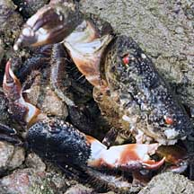 Terumbu Buran, Nov 10 |
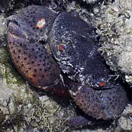 Terumbu Salu, Jan 10 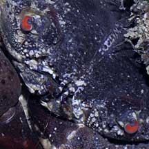 |
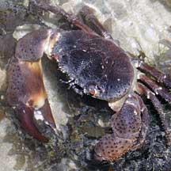 Pulau Salu, Aug 10 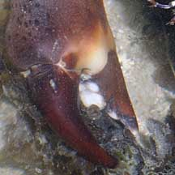 |
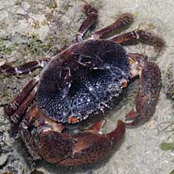 Pulau Salu, Aug 10 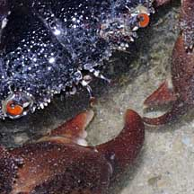 |
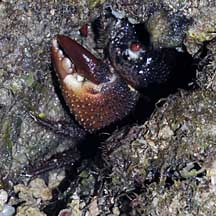 Terumbu Salu, Jan 10 |
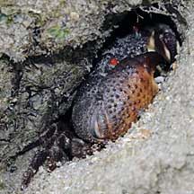 Terumbu Berkas, Jan 10 |
| Family
Eriphiidae recorded for Singapore in red are those listed among the threatened animals of Singapore from Davison, G.W. H. and P. K. L. Ng and Ho Hua Chew, 2008. The Singapore Red Data Book: Threatened plants and animals of Singapore.
|
|
Links
References
|